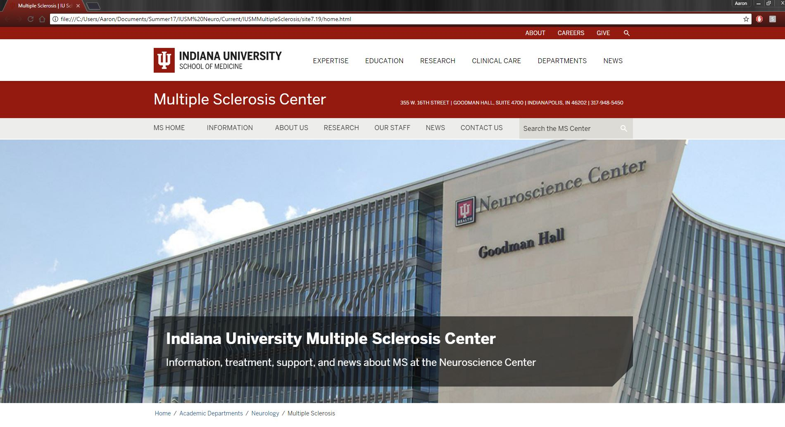
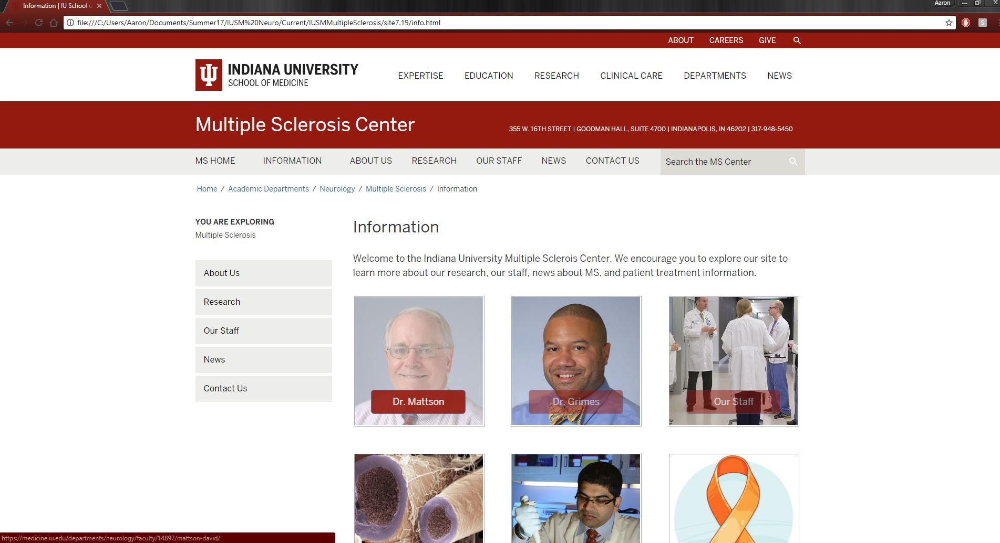
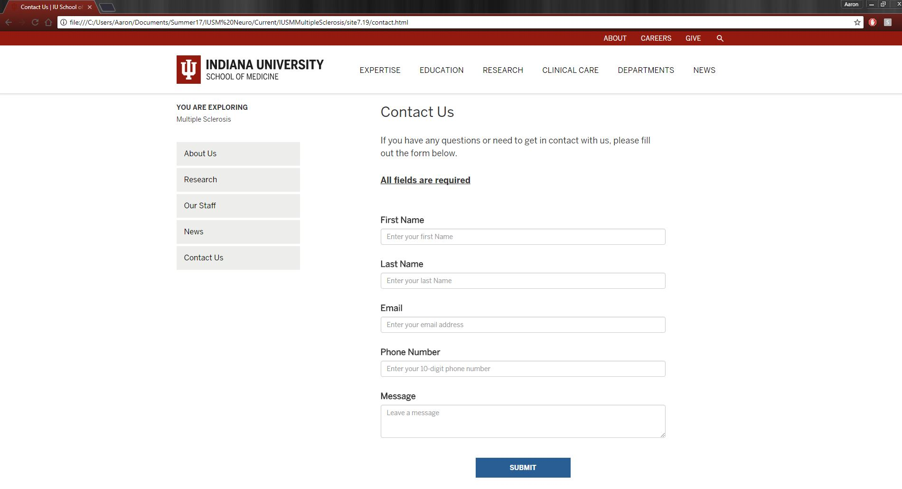
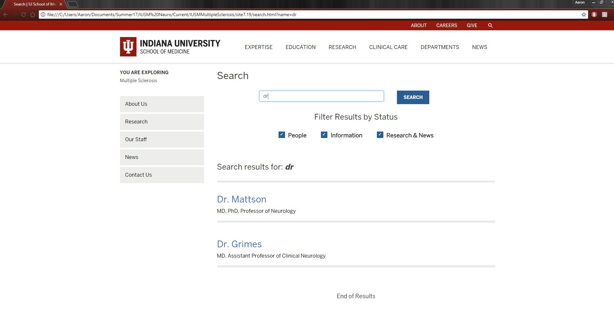

For this internship, I worked with a clinical research nurse in the neurology department at IU during the summer of 2017. Our goal was to create a site aimed at attracting potential clients for multiple sclerosis clinical trials. I worked on building a decent portion of the front-end before passing the rest of the site off to IU at the end of the summer
You can demo the site here.
Note that this demo is an unfinished version of the site. Some pages are empty or contain filler text. The top navigation bar links take you to the medicine.iu.edu domain.
This was the home page for the site. The CSS was built from scratch to fit in with the IUSM branding
This was the general information page built with a responsive bootstrap grid.
This 'Contact Us' page sent the form data to a specified email address and kept all data in a Google Docs spreadsheet.
Because I only had front-end access at the time, the data is sent using a Google Apps Script.
This was the search results page. The search results are all links to other portions of this site or other pages throughout medicine.iu.edu.
Again, this was built completely on the front-end using a JavaScript framework called filter.js.
